Codex Visual Pack v1
Claude review build. New generated assets only; no runtime references or existing game files are changed.
Title candidate
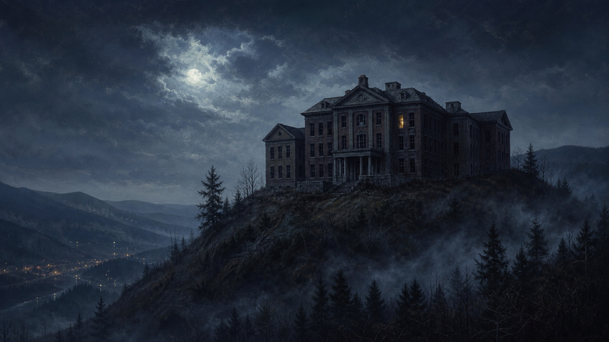
P1 prop and fire replacements
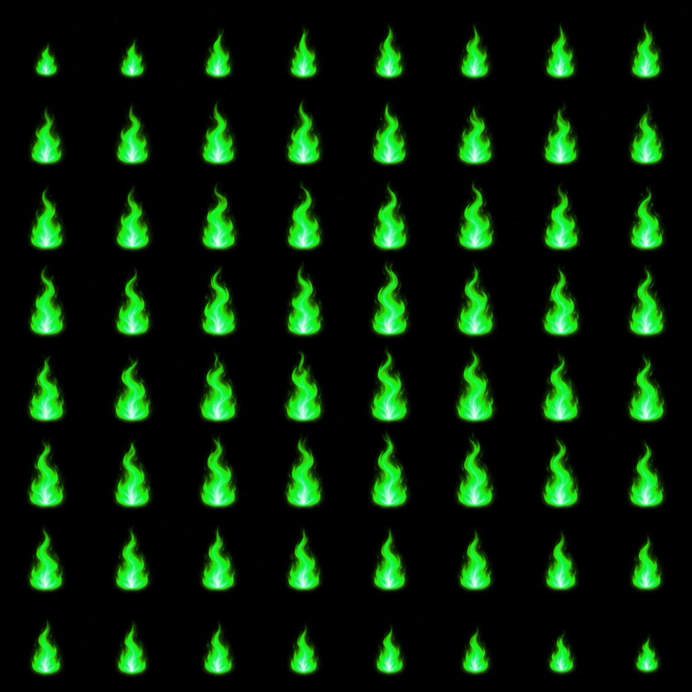
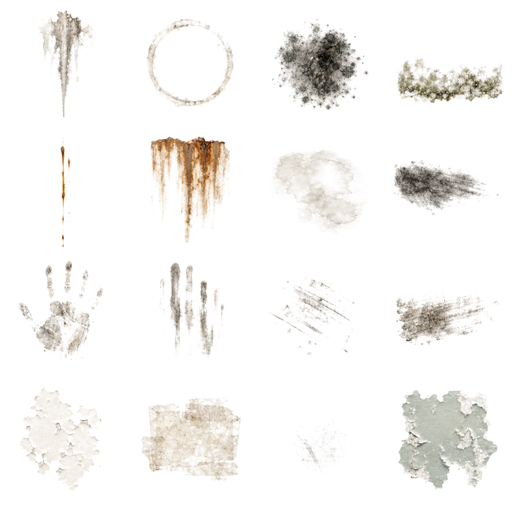
4× wall repetition
Each panel repeats the final 1K albedo four times on both axes.
Exact-text period signs
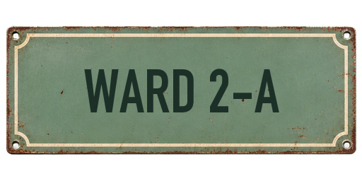
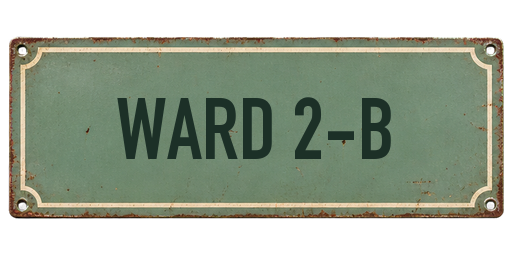
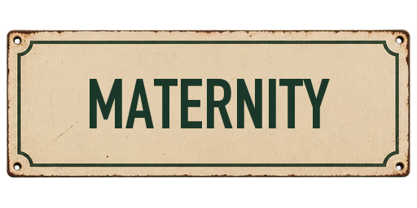
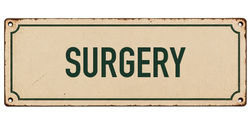
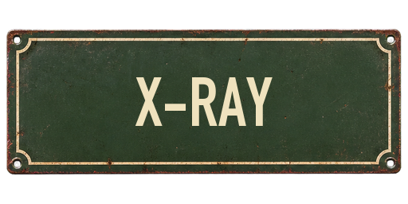
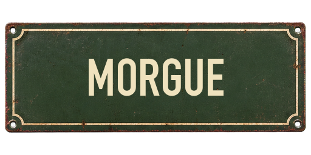
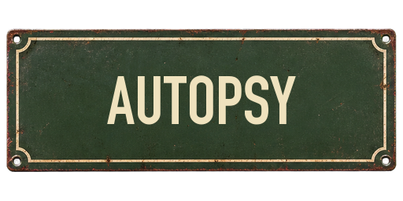
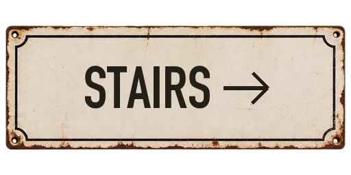
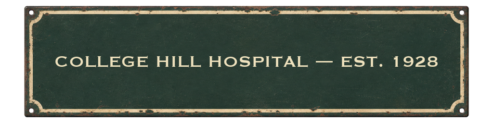
Document viewer backplates
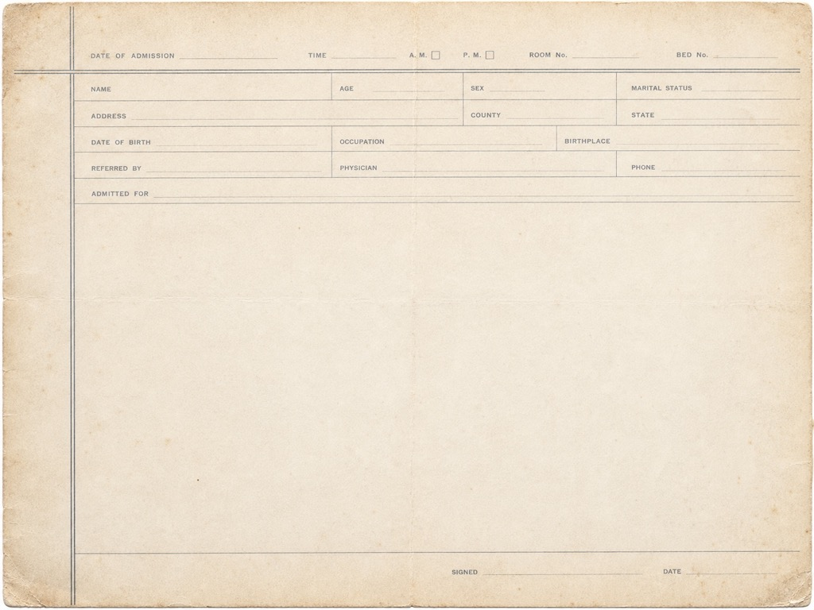
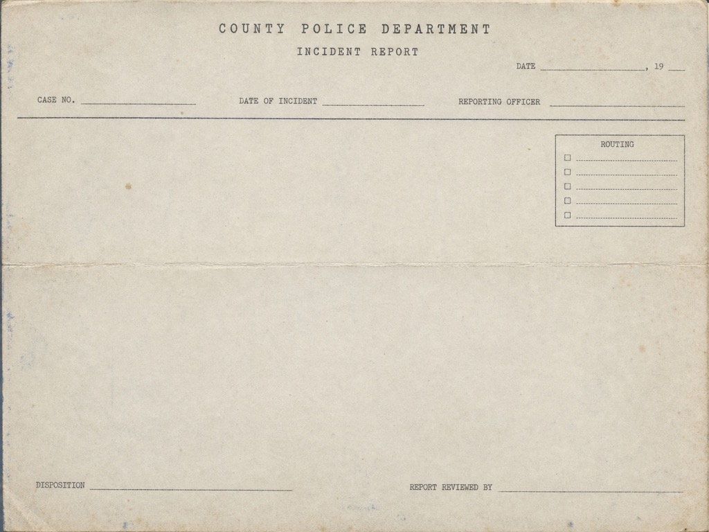
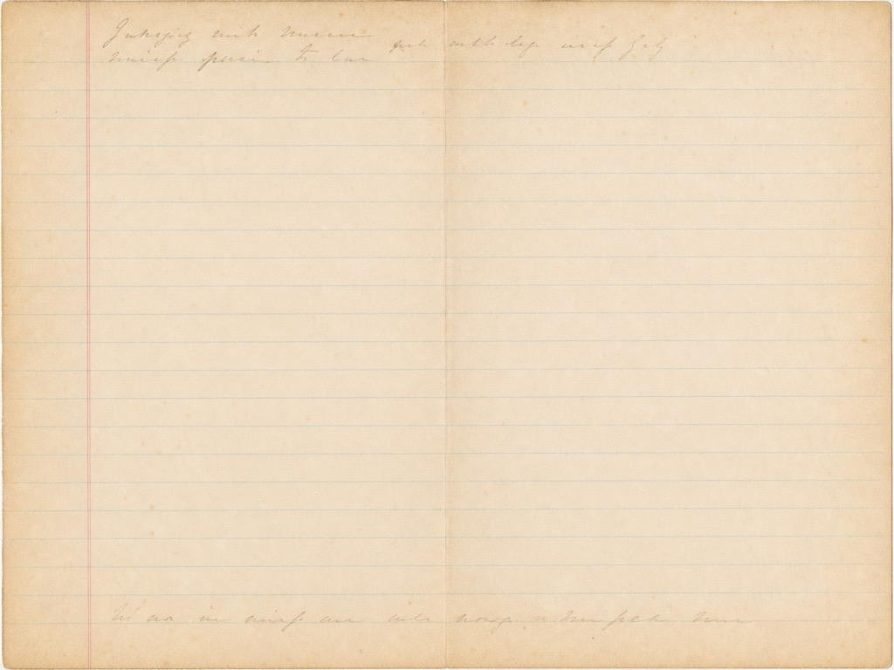
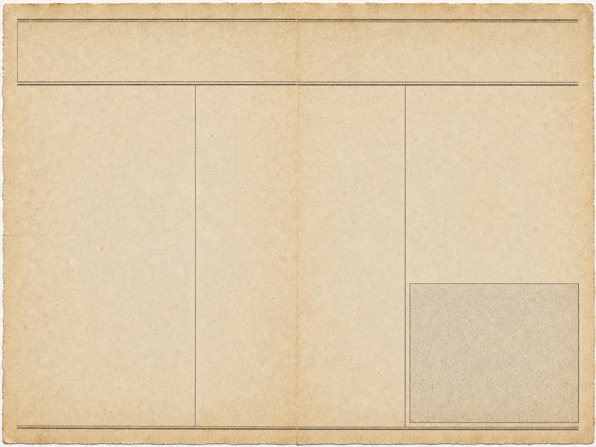
Burning parchment card
See the sibling README for integration mappings, technical caveats, budgets, and Claude's decision checklist.